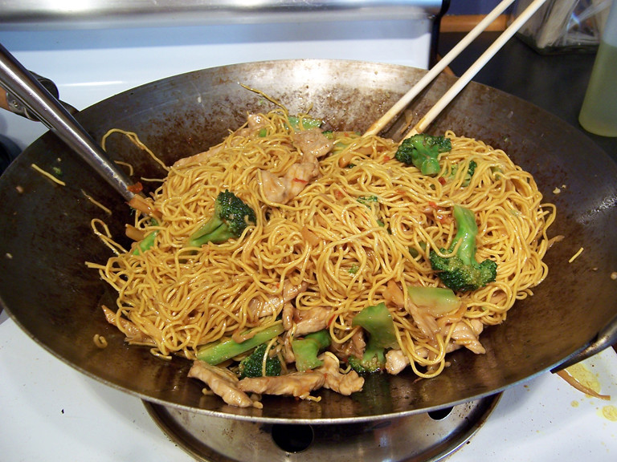

Chowmein Recipe
Home

Description
Chow mein is a popular stir-fried noodle dish made with vegetables, soy sauce, and optional proteins like chicken or shrimp. It's quick, flavorful, and packed with texture.
Ingredients
- Noodles (chow mein or egg noodles)
- Cabbage
- Carrot
- Bell pepper
- Onion
- Garlic
- Soy sauce
- Vinegar
- Olive Oil
- Salt
- Black Pepper
- Chili sauce (optional)
Steps
- Boil the noodles until just tender, then drain and toss with a little oil.
- Heat oil in a wok or pan and sauté garlic and onions.
- Add sliced vegetables and stir-fry on high heat.
- Mix in the noodles along with soy sauce, vinegar, and chili sauce.
- Toss well until everything is combined and heated through. Garnish and serve.
- ENJOY!